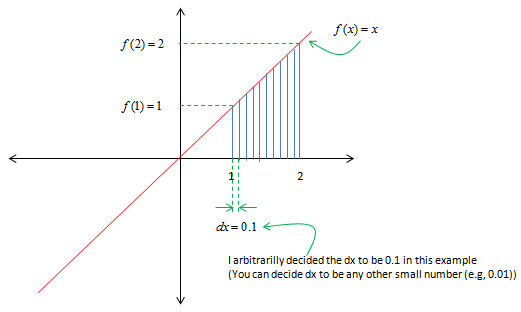
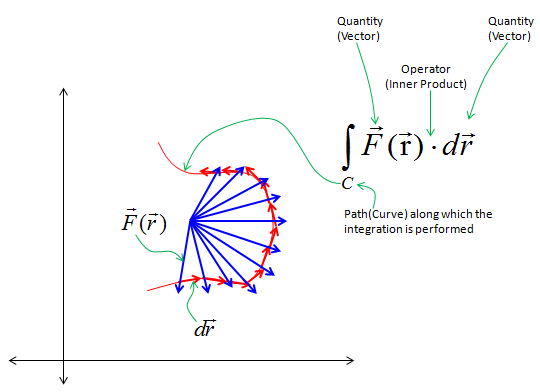

Calculus - Integration Home : www.sharetechnote.com
Integration is expressed in mathematical form as shown below. If you have finished any cource for pre-calculus or calculus, you would almost automatically assosiate it with calculating the area of a closed shape. However, it is only one application of integration, not everything of integration even though original idea of integration might come from the motivation to calculate the area. (Watch this excellent Youtube Mechanical Universe 07 - Integration. If this link does not work, search in Youtube with "Mechanical Universe 07 - Integration" keyword). But I noticed that automatic association of Integration with the area often hinder me from understanding the practical meaning of many other form of integration. So I would like to show you a little generic form of integration rather than giving you too much impression of 'calculating the area'.
Generic form of integration can be represented as shown below. As you see, "Integration" is a processing of "repeating a specific operation and summing up all the result".
The real meaning of the integration is determined by what are the quantity and operator in the formula. See following examples and you will get familiar with how you interpret various Integral forms.
Assuming you now have some intuitive understanding of "Integration", now let's get a little bit deeper into mathematical concept. One example is shown below. Associate this expression with the intuitive form you saw above. Actually this example is the one you would see in almost every Calculus/Pre-Calculus book.
dx in this example represents 'width' of a rectangle and f(x) represents the height of a rectangle. The operator between dx and f(x) is 'multiplication'. So the meaning of f(x) dx is the area of a small rectangle. If you represents the meaning of the whole integral equation, it can be represented as shown below.

If we represent this process into a spreadsheet format which you may give you more intuitive form, it can be represented as shown below.
Let's look at another example as shown below. In this example, you see a lot of vectors in blue arrow and vectors in red arrow. You see the red vector is sitting on top of a curve (path) shown in red curve. Each of the red vector is the tangential to each point on the path. Now I want to take the inner product of each red vector and blue vector and sum them all. This operation can be represented in a mathematical form as shown below. This kind of integration is called "Line Integral".

Let's look at another example as shown below. In this example, you see a lot of vectors in blue arrow and vectors in red arrow. You see the red vector is sitting on top of a curve (path) shown in red curve. Each of the red vector is the tangential to each point on the path. Now I want to take the inner product of each red vector and blue vector and sum them all. This operation can be represented in a mathematical form as shown below. The mathematical operation is exactly same as the one shown in previous example. The only difference is the path the red vectors are going along. The path in this example is a closed curve. This kind of integration is called "Circular Integral" (The closed path need not to be exact circle as below. It can be any arbitrary shape of closed curve).

Let's look at another example as shown below. In this example, you see two vectors in each segments of the surface. one of the vector is normal to each surface segment(This vector is called 'normal vector'). The other vector is an arbitrary angle to the normal vector . Now I want to take the inner product of each red vector and blue vector and sum them all. This operation can be represented in a mathematical form as shown below. The mathematical operation is exactly same as the one shown in previous example. The only differences is that this operation goes along the surface. This kind of integration is called "Surface Integral".